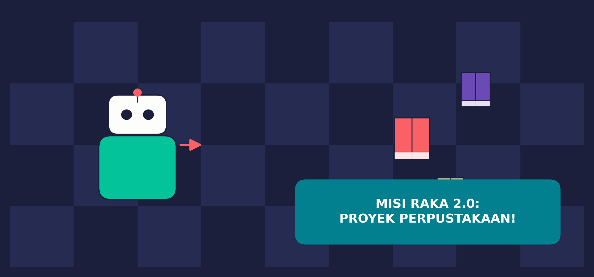
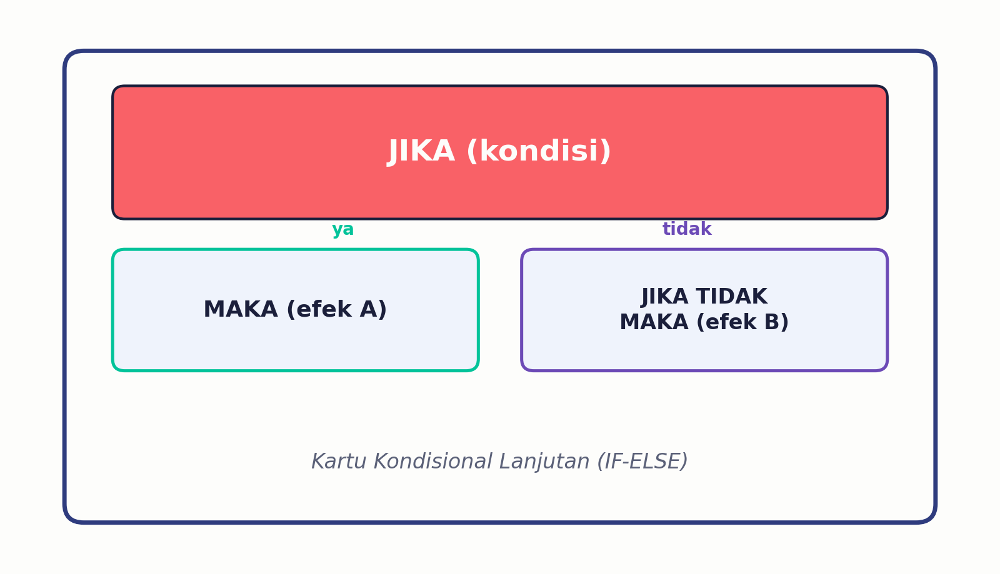
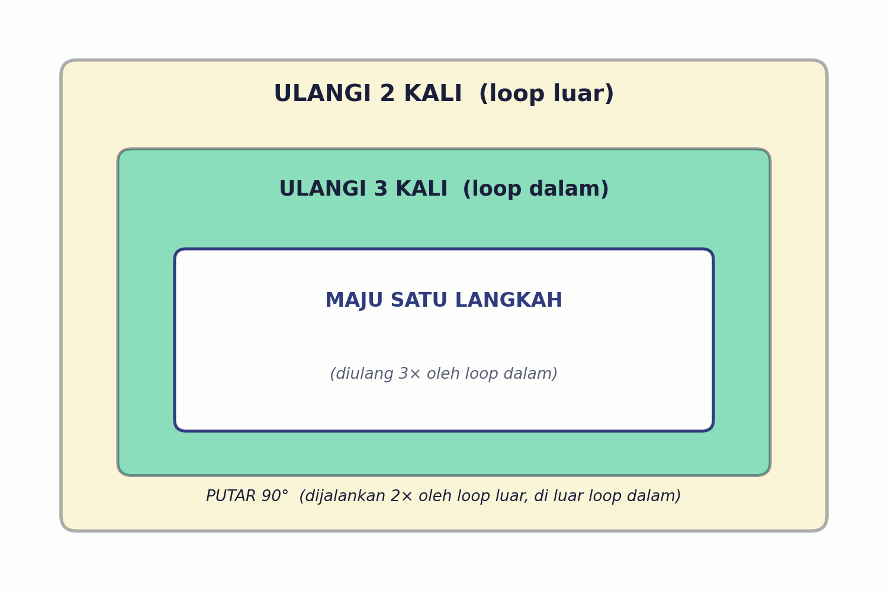
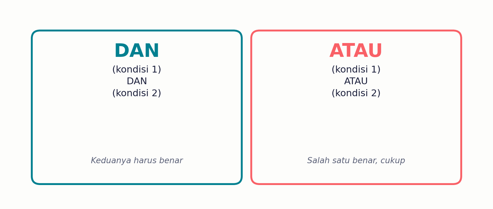

RAKA naik level — sekarang harus mengambil beberapa buku sekaligus di perpustakaan yang lebih rumit. Yuk pelajari 3 alat baru dan rancang mini project kelompokmu sendiri!

Sebelum Lanjut
Di pertemuan sebelumnya kita sudah belajar kosakata dasar pseudocode: urutan (instruksi satu-satu), pengulangan (ULANGI), dan kondisional sederhana (JIKA-MAKA). Nah, sekarang misi RAKA jauh lebih rumit — dia harus mengunjungi beberapa rak buku sekaligus, dan cuma boleh ambil buku yang benar-benar dipesan. Kosakata lama kita belum cukup untuk ini!
Kelompokmu akan merancang denah perpustakaan sendiri, menyusun pseudocode lengkap, lalu mempresentasikan & mendemonstrasikan hasilnya ke teman sekelas.
Alat Baru #1
Kartu JIKA-MAKA yang lama cuma punya SATU rencana: kalau syaratnya benar, baru bertindak. Kalau salah? RAKA cuma diam, lanjut ke instruksi berikutnya tanpa rencana khusus. Sekarang kita kenalan sama versi lengkapnya:

Dengan if-else, RAKA SELALU tahu harus berbuat apa — baik syaratnya benar maupun salah.
Alat Baru #2
Perpustakaan yang besar biasanya punya pola lorong berulang. Misalnya "maju 3 langkah, lalu putar" yang sendirinya harus diulang 2 kali biar membentuk pola zig-zag. Ini namanya pengulangan di dalam pengulangan.

Loop dalam (ULANGI 3 KALI) membuat RAKA maju 3 langkah, lalu putar sekali. Semua itu diulang 2 kali oleh loop luar — hasilnya pola zig-zag!
Alat Baru #3
Kadang suatu tindakan bergantung pada LEBIH DARI SATU syarat. RAKA cuma boleh ambil buku kalau: (1) memang ada buku, DAN (2) buku itu sesuai pesanan.

JIKA (ada buku) DAN (sesuai pesanan) MAKA (AMBIL BUKU)
JIKA (rak kosong) ATAU (sudah diambil) MAKA (lewati rak)
Gabungkan Semuanya
Berikut contoh yang menggabungkan urutan, pengulangan bersarang, if-else, DAN operator logika sekaligus — persis seperti yang akan kalian buat di mini project:
Cuma 10 baris, tapi RAKA bisa menyusuri pola zig-zag sekaligus mengecek dua syarat sebelum mengambil buku!
Sekarang Giliran Kalian
Bersama kelompokmu (4–5 orang), rancang proyek versi kalian sendiri:
Minimal 6×6 kotak: 1 BASE, 2+ rak buku target, 3+ rintangan.
Wajib memuat kelima unsur: urutan, pengulangan, nested loop, if-else, operator logika.
Tunjukkan & jalankan pseudocode-mu di depan kelas (6–8 menit).
Yuk, Coba Dulu!
Hitung dulu: berapa kali total instruksi MAJU SATU LANGKAH dijalankan pada pseudocode berikut?
Perhatikan pseudocode berikut. Jika di suatu kotak ADA buku, tapi buku itu BUKAN yang dipesan, apa yang akan RAKA lakukan?
Cek Pemahamanmu
Selamat mengerjakan mini project bersama kelompokmu — tunjukkan kreativitas dan kerja sama tim kalian! 🚀